Les nombreux musées de Marseille proposent des expositions permanentes ou temporaires autour de thèmes variés : Histoire de Marseille, mode, Antiquité, Histoire Naturelle ou encore art contemporain. Installés dans des édifices patrimoniaux du XVIIe siècle ou d’architecture récente, les musées de Marseille sont répartis dans plusieurs quartiers.
Nous allons vous présenter certains des musées intéressants à visiter à Marseille.
Le Mucem
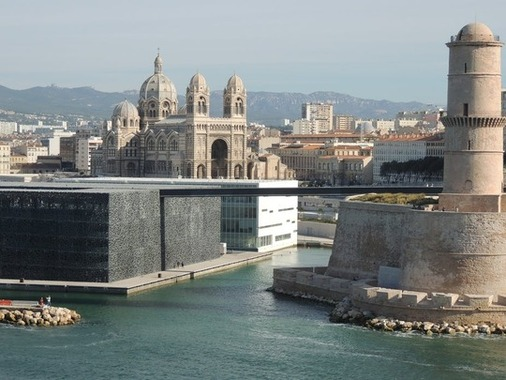
Avec près de 45 000 m² répartis sur trois sites, le Mucem est un incontournable à Marseille.
Projet gouvernemental porté par le ministère de la Culture et de la Communication, le Musée des civilisations de l’Europe et de la Méditerranée, premier grand musée national consacré aux civilisations de Méditerranée pour le XXIème siècle et dirigé par Bruno Suzzarelli, a ouvert ses portes à Marseille le 7 juin 2013. Il est rapidement devenu l’un des musées de Marseille les plus visités. Les collections du musée sont préservées à la Belle de Mai au Centre de Conservation et de Ressources.
Un musée, trois lieux à visiter !
L’esplanade du J4
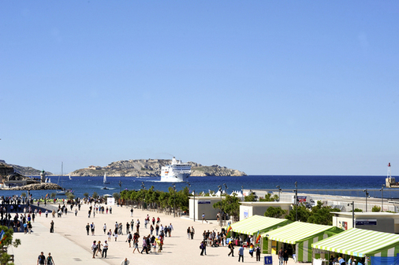
Le nouveau bâtiment est construit sur l’ancien môle portuaire du J4 par l’architecte Rudy Ricciotti associé à Roland Carta, et il contient le cœur du Mucem. Il accueille deux plateaux d’expositions : le premier, avec La Galerie de la Méditerranée, est dédié à la découverte des étapes majeures des civilisations méditerranéennes. Le deuxième plateau accueille les expositions temporaires.
Le J4 comprend également un espace dédié aux enfants ; si vous programmez une sortie en famille à Marseille, les petits apprécieront le détour !
Il abrite également :
- Un auditorium pour la présentation de spectacles, de concerts, de cycles de cinéma
- Une librairie
- Un restaurant doté d’une terrasse panoramique dirigé par Gérald Passédat, chef 3 étoiles
Le Fort Saint-Jean
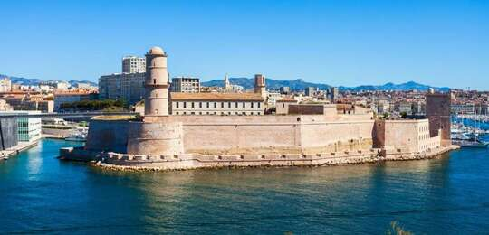
Le fort Saint-Jean restauré (15 000 m²) est un monument historique dont les origines remontent au XIIe siècle. Relié au J4 par une passerelle haute, jetée au-dessus de la mer, il permet au visiteur de profiter de panoramas spectaculaires, invisibles jusqu’alors.
Le site mérite le détour lors d’un séjour à Marseille car il réserve de nombreuses surprises.
Le public est ainsi invité à déambuler dans un nouveau jardin méditerranéen et à découvrir les richesses des collections d’arts et traditions populaires du Mucem, ainsi que la création contemporaine méditerranéenne. Le site permet aussi de profiter de spectacles en plein air, d’un café et d’une librairie-boutique. Une seconde passerelle le relie au quartier du Panier.
Le Centre de conservation et de ressources (CCR)
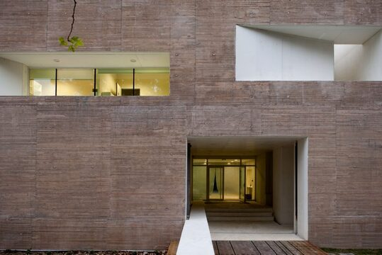
Un troisième site, dans le quartier de la Belle de Mai, abrite le Centre de Conservation et de Ressources (CCR – 14 000 m²), conçu par l’architecte Corinne Vezzoni, associée à André Jollivet. Lieu de conservation des collections, le CCR est également l’occasion de faire visiter les coulisses du musée qui comprennent plusieurs espaces ouverts au public : des réserves accessibles, un espace documentaire de consultation, un lieu d’expositions temporaires.
Musée Regards de Provence
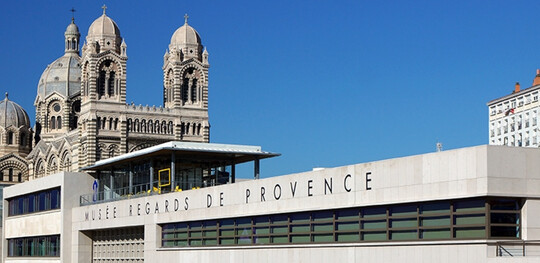
Le Musée Regards de Provence met à l’honneur des collections de peintures, sculptures, photographies et dessins liés à Marseille, la Provence, et la Méditerranée, du XVIIIe siècle à nos jours. Il accueille également de nombreuses expositions temporaires mettant à l’honneur art moderne et contemporain. Vous serez charmés par sa vue panoramique sur le port de la Joliette, le fort Saint Jean, le Mucem et la Villa Méditerranée.
Tarifs:
- Plein tarif: 6 euros
- Tarif réduit: 2 euros
- Tarifs handicapés: 4, 70 euros
Musée d’Histoire de Marseille
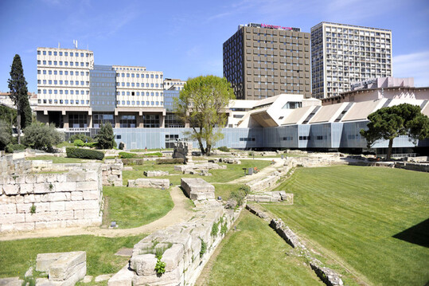
Le Musée d’Histoire de Marseille a été fondé en 1983. Il présente des collections uniques et inédites, retraçant 26 siècles d’histoire de la ville à travers différents objets du quotidien, pièces de beaux-arts et vestiges archéologiques.
Un musée interactif
Situé à deux pas du Vieux-Port, lieu où Marseille fut fondée par les Phocéens, le Musée d’Histoire de Marseille abrite sur près de 3500 m² le site du Port antique ainsi qu’une exposition permanente, mais aussi un espace d’exposition temporaire, un centre de documentation et un auditorium.
Pour découvrir ces 26 siècles d’histoire, le musée a mis en place de nombreux outils multimédias pour permettre aux visiteurs de se plonger au plus profond de l’histoire de la Cité Phocéenne. Une application a été mise en place afin de découvrir certains lieux et monuments de la ville tels qu’ils étaient à l’Antiquité et au Moyen-Age, grâce à son smartphone ou tablette. La technologie de réalité augmentée permet d’être complètement immergé en profitant de reconstitutions fidèles, et d’avoir accès à de nombreuses informations historiques.
Des vestiges archéologiques
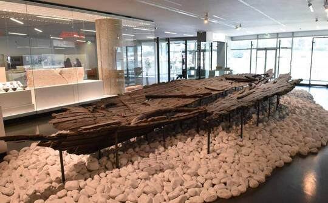
Vous pourrez admirer la plus grande flottille de vaisseaux antiques au monde. De plus, l’église de Malaval datant du 5e siècle et découverte lors de fouilles archéologiques a permis de mieux comprendre les débuts de la Chrétienté en Europe occidentale et de reconstituer la fabrication de l’huile sainte. La grotte Cosquer témoigne d’une occupation humaine à Marseille, bien avant sa fondation en 600 av JC. Des milliers de peintures et gravures ornent cette grotte, habitée il y a plus de 27 000 ans.
La Vieille Charité
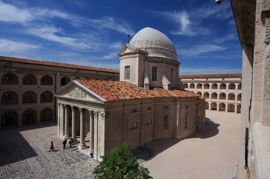
Lieu emblématique de Marseille, la Vieille Charité est nichée au cœur du Panier, le noyau historique de la ville. Merveille de l’architecture du XVIIe siècle, La Vieille Charité symbolise à la fois la richesse du patrimoine marseillais et offre à la ville un haut lieu culturel. Restaurée, la Vieille Charité est devenue, depuis 1986, un centre pluridisciplinaire à vocation scientifique et culturelle de la Ville de Marseille. Elle est classée au titre des Monuments Historiques.
Un édifice de toute beauté
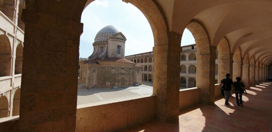
La Vieille Charité se compose de quatre ailes de bâtiment fermées sur l’extérieur et ouvertes sur une cour rectangulaire par des galeries sur trois niveaux qui rythment la vie à l’intérieur de l’édifice.
Le corps de ces bâtiments est fait de trois étages de galeries superposées avec des arcades en plein centre s’ouvrant sur une cour intérieure où se trouve une chapelle.
Au centre de ce quadrilatère, en direction de la porte d’entrée, se trouve une chapelle surmontée d’une coupole elliptique de style baroque. Le porche à colonnes corinthiennes, d’architecture Second Empire, reprend le thème de la Charité accueillant les enfants indigents. Elle fut bâtie entre 1861 et 1863.
Musée Cantini
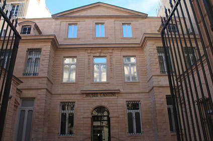
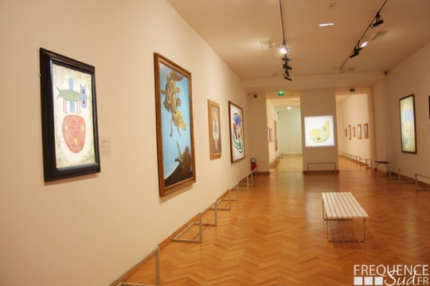
Découvrez le Musée Cantini, un hôtel particulier qui abrite une importante collection d’art moderne et d’art contemporain. Incontournable si vous aimez l’art, il est situé en plein cœur de la ville.
Le musée Cantini se trouve dans un Hôtel particulier de l’hypercentre marseillais (1er arrondissement). Il est construit en 1694 par la Compagnie du Cap Nègre et il fut racheté par la famille de Montgrand qui le conserva jusqu’en 1801. Il connut par la suite plusieurs propriétaires avant d’être acquis par Jules Cantini, important marbrier qui prit part à la construction de nombreux édifices civils et religieux à Marseille sous le Second Empire.
Après cette acquisition et par amour pour l’art, c’est en 1916 que Jules Cantini en fit don à la ville, afin qu’il devienne un musée consacré à l’art de notre temps.
L’art moderne est au cœur des expositions du musée. Le post-impressionnisme, le fauvisme, le cubisme, et les différentes tendances post-cubistes des années 1930 sont mises en avant et un large panorama d’œuvres de ces courants y est présenté.
Musée du Savon de Marseille
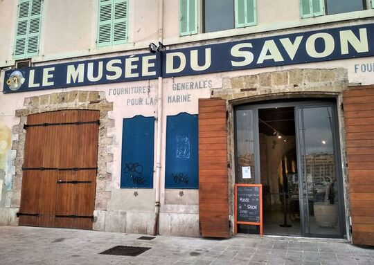
Découvrez un espace muséal de 285 m² inauguré en décembre 2018, né d'une volonté pédagogique, territoriale et touristique !
Ce parcours de visite a été mis en place au sein même de l'une des dernières savonneries historiques de la région. On y découvre l'histoire du savon de Marseille, son procédé de fabrication traditionnel, ses usages d'antan mais également son ancrage territorial et son contexte industriel.
L'une des plus belles collections privées de Savons de Marseille y est exposée. Elle appartient à Josette et Vittorio Quittard, deux Marseillais passionnés depuis 20 ans par l'histoire du Savon de Marseille, et à l'initiative de la réalisation de deux films, d'un livre et de 93 expositions.
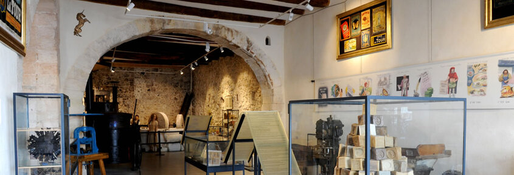
Photographies, cuves, savons anciens, publicités, tampons en buis, planches à laver, battoirs... soit au total près de 250 objets de toutes sortes sont exposés dans trois espaces.
Construit tout autour de la salle des chaudrons, véritable coeur de l'usine, le musée permet également de découvrir le processus de saponification et offre un parcours complet de visite de l'usine, pour mieux comprendre les différentes étapes du procédé marseillais.
Tarifs:
De 3 à 5 euros.
Muséum d'Histoire Naturelle
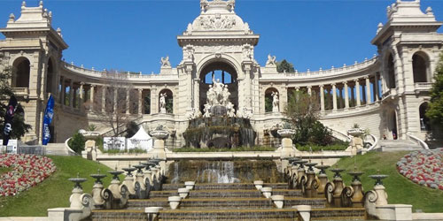
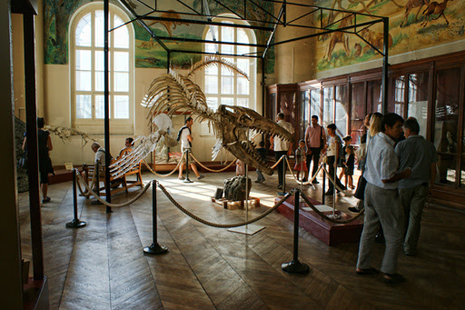
Créé en 1819 sous l'impulsion du Marquis de Montgrand maire de Marseille, et du Comte de Villeneuve, préfet des Bouches du Rhône, le Muséum regroupe alors des collections de cabinets de curiosités du XVIIIe siècle de la ville et des dons de l'Etat avant de s'installer en 1869 dans l'aile droite du Palais Longchamp, édifié à la gloire de l'eau, des Arts et des Sciences. Le Muséum comprend aujourd'hui une salle de zoologie mondiale, une salle sur l'évolution et l'adaptation du vivant, une salle de préhistoire, une salle de Provence datant du XIXe siècle. Le musée est doté d'une bibliothèque scientifique de consultation pour adultes et enfants à consulter sur rendez-vous.
Musée de la Moto
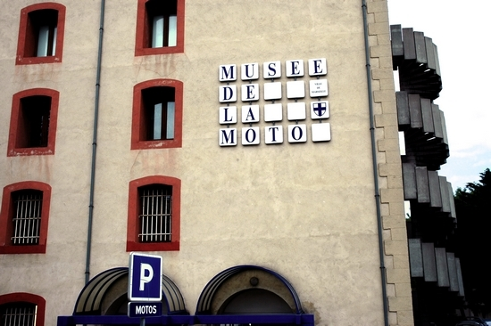
A la lisière de Malpassé et du Merlan, une ancienne fabrique, superbement réhabilitée, abrite l'un des très rares musées, exclusivement consacrés à la moto.
Les près de 200 modèles qu'il expose, depuis l'antique tricycle à pétrole de Dion-Bouton (1898) jusqu'aux machines de course contemporaines, résument son histoire, tissée de légendes et de défis industriels. Nouvelles acquisitions : 10 vélos de 1885 à 1930, ainsi que des vélos d'enfants du début du XXe. siècle aux années 30.
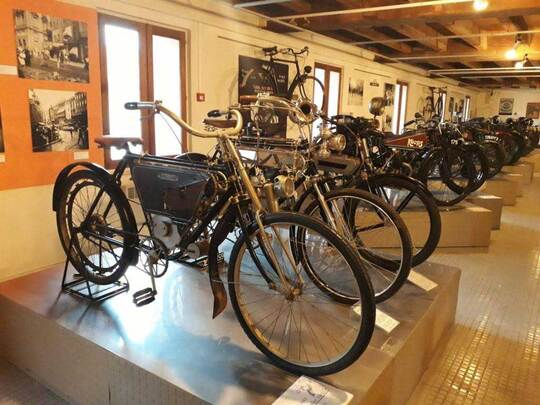
Le musée propose également un nouveau jeu pour les enfants de 8 à 12 ans, en groupe ou en individuels : le jeu d'enquête "Mission Fantomard" avec des indices à trouver, et des motos du musée hantées par des fantômes. Nous donnons au début de la visite pour le public de plus de 7 ans une bande dessinée faite par un graphiste sur l'évolution de la moto, avec des jeux.
Surface de l'exposition permanente : 1200
Musée Subaquatique de Marseille
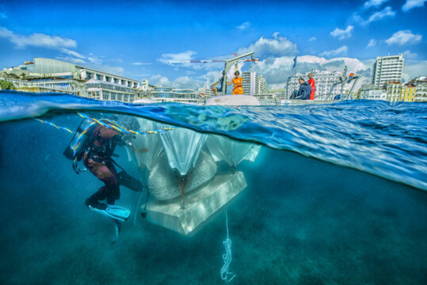
Le Musée Subaquatique de Marseille est un site remarquable, une aire muséale hors normes proposant une immersion totale : l'expérience d'une rencontre inédite avec le milieu subaquatique et l'observation in vivo d'une relation entre l'homme et la nature.
A 100 m de la plage et 5 m de profondeur 10 sculptures sont immergées dont une est connectée avec une application intégrée. Le musée se donne pour objectif de susciter le plaisir, celui qui naît de la découverte du beau et du surprenant. Il est un formidable levier pour sensibiliser aux enjeux environnementaux ou encore éveiller les curiosités sur le monde de l'art et les sports nautiques.
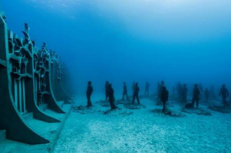
La visite du musée est libre et se fait sous la responsabilité des usagers, sur réservation préalable. Nous prodiguons des conseils et recommandations, proposons la location de matériel… Dans le cadre des visites guidées individuelles ou en groupe, vous pouvez vous rapprocher du club le GRASM.